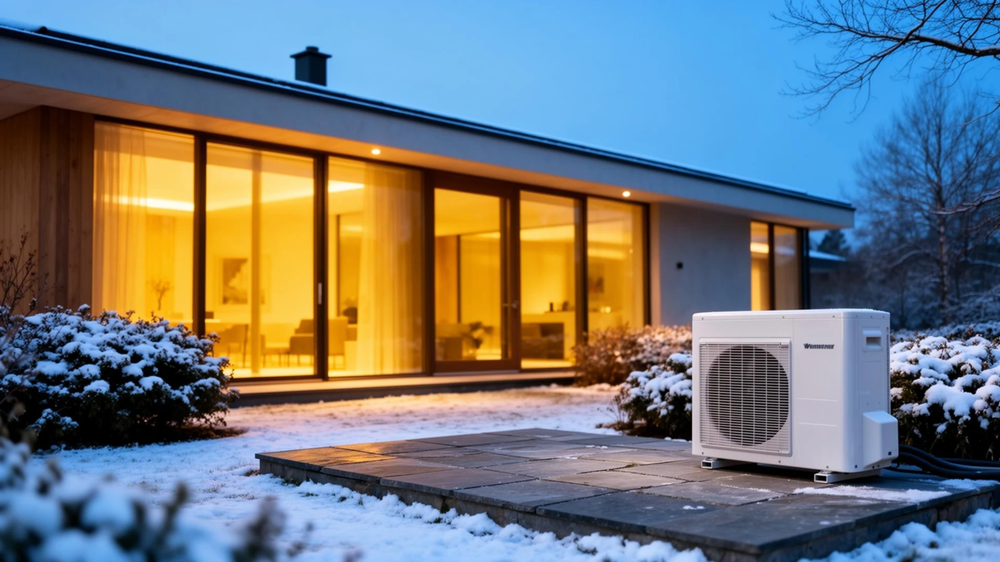

Objekat
Površina, izolacija i potrebe za grejanjem ili hlađenjem.
ZELENI PROGRAM / ENERGETSKA EFIKASNOST
Informišite se o savremenim sistemima grejanja i hlađenja i mogućnostima finansiranja energetski efikasnih ulaganja kroz GEFF program EBRD-a.
02 / OPREMA

TOPLOTNE PUMPE
Toplotne pumpe koriste energiju iz okruženja za grejanje, a određeni sistemi omogućavaju i hlađenje objekta. Pogledajte dostupna rešenja i njihove karakteristike.
Pogledajte toplotne pumpeODABIR SISTEMA
Odgovarajuća oprema zavisi od karakteristika objekta, načina korišćenja i ukupnih troškova sistema.
Površina, izolacija i potrebe za grejanjem ili hlađenjem.
Vrsta opreme, način distribucije toplote i regulacija temperature.
Cena opreme, ugradnje i dugoročnog održavanja.
03 / INFORMACIJE
GEFF kreditna linija podržava ulaganja u energetski efikasne tehnologije u domaćinstvima, kao i određene projekte proizvođača i distributera takvih tehnologija. Finansiranje se sprovodi preko partnerskih finansijskih institucija.
O programu na GEFF sajtu ↗Postoje prethodno odobrene tehnologije u Tehnološkom selektoru i investicije koje prolaze posebnu procenu. Proverite tačnu oznaku uređaja i uslove koji važe za vaš projekat. Prihvatljivost tehnologije ne znači automatsko odobrenje kredita.
Zvanična provera prihvatljivosti ↗Program predviđa pravila i za određene pomoćne troškove, uključujući ugradnju. Obim i ograničenja proverite u važećim uslovima GEFF-a. Ne pretpostavljajte da je svaki dodatni trošak prihvatljiv.
Proverite pravila za troškove ↗04 / PUT DO FINANSIRANJA
Proverite tehnologiju u GEFF selektoru. Pripremite predračun i zahtev za finansiranje kod partnerske institucije.
Nakon odluke institucije, realizujte nabavku i ugradnju. Sačuvajte fakture, potvrde i dokaze o plaćanju.
Podnesite zahtev za proveru realizovanog projekta. Isplata podsticaja zavisi od uspešne verifikacije i ispunjenih uslova.
05 / GEFF PROGRAM
Informacije o prihvatljivoj opremi, finansijskim institucijama i uslovima prijave potražite na zvaničnim stranicama GEFF programa.
Uslovi finansiranja zavise od programa i partnerske finansijske institucije. Pre podnošenja zahteva proverite aktuelne informacije na zvaničnom GEFF sajtu.
OPREMA I INFORMACIJE
Za informacije o proizvodima, cenama i dostupnosti opreme kontaktirajte INKOM.